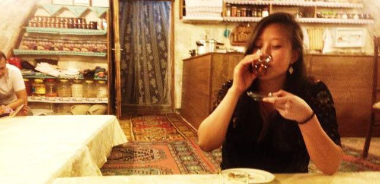

alina liu is an artist stuck in a scientist's body. whether she's crunching numbers or sketching, programming or writing,
she loves to experiment. she has a strong passion for meeting new people, experiencing beauty, and travelling.
alina currently works at microsoft in san francisco, ca as a consultant specializing in sql/bi. she graduated from the
cornell university college of engineering with a degree in operations research and information engineering in 2013.